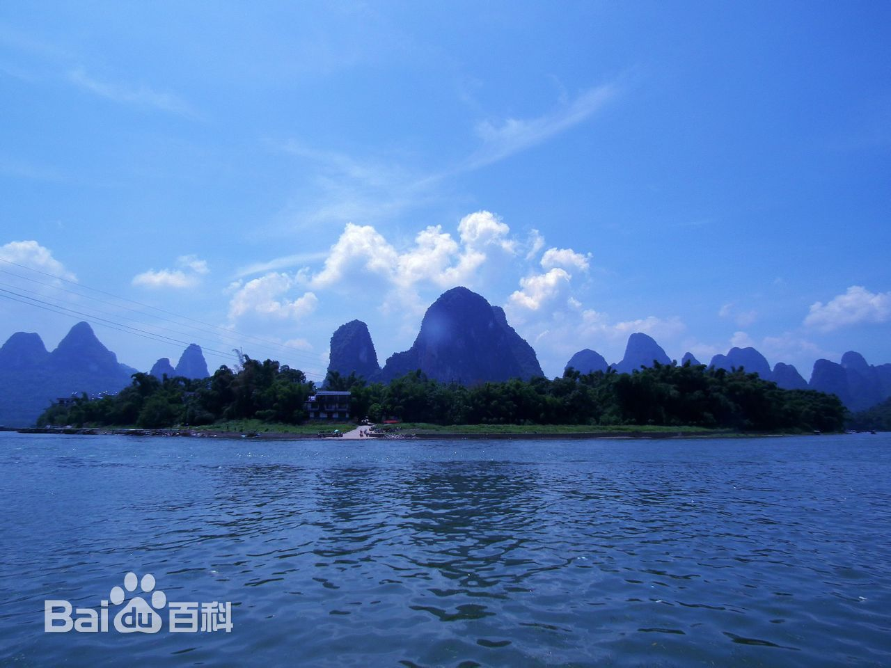

桂林阳朔
桂林灵川
桂林大兴

龙脊梯田
|  | 兴坪集镇:兴坪集镇早在三国吴甘露元年（公元265年），即已为熙平县治，管辖阳朔一带，隋代开皇十年（公元590年）废熙平县改置阳朔县，兴坪遂为阳朔县所辖。 境内不仅有九马画山、螺蛳山、莲花岩、天水寨、灵宝阁等八大景区、24个风景点让人叹为观止，还有明代建筑腾蛟庵1998年7月，时任美国总统克林顿浏览漓江并到兴坪渔村访问，更激起了不少中外游客慕名前往，追寻总统足迹。 |
莲花镇:莲花镇在恭城南面，距县城13公里。东与贺州市钟山县接壤，南与桂林市平乐县同安镇为邻，西邻平乐县二塘镇，北接本县的平安乡， 是“两市三县之交”的重点镇区。镇内二级路直达高铁站和高速路口，集镇距桂梧高速同安出入口20公里，距恭城高铁站15公里，正在 规划建设的天蛾至富川二级路也将穿镇而过，形成“十字形”的交通运输网络。 |
溶江镇:溶江镇位于兴安县西南部，行政区域面积468平方公里，辖17个行政村，1个社区 ，总人口5.6万人。溶江资源优越，不仅是“南方吐鲁番”，而且拥有全国最大米粉连锁机构、 广西第二大矿泉水生产基地、桂林最大的铁合金生产基地。2016年，仅葡萄一项，农民人均收 入可达1万元以上。该镇还大力培育罗汉果、百香果、灵芝等新兴产业的发展。 |
衣架小镇:荔浦县荔浦是享誉中国的南方食品城，是中国乃至世界最大的木衣架出口生产基地， 荣获“中国衣架之都”称号。荔浦是“文场”戏剧的发源地之一，被中国曲艺家协会授 予“中国曲艺之乡”称号。 |